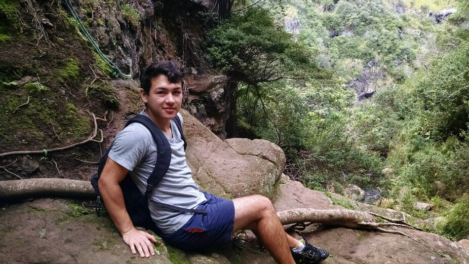

Currently in my senior year studying Computer Science at the University of California, Los Angeles.
I am excited by programming projects with real world impact. I am currently learning Android/Java while building a social networking app to allow students to connect with student mentors on campus.
Aside from programming, I am also interested in entrepreneurship, tennis, fitness, UI/UX, video & audio editing, game design, and psychology.